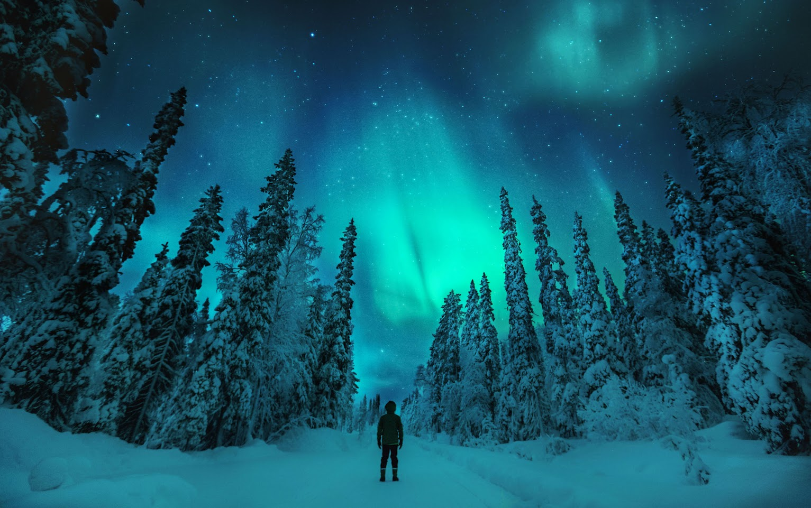

THE OTHERWORDLY AURORA borealis, or northern lights, begin high in the Earth's atmosphere-at
altitudes from 60 to more than 250 miles- when charged particles fromt he sun become trapped in the
Earth's magnetic field. The result is a colorful, dancing light show.

The first time I filmed an aurora was from an icebreaker near Antartica. Luckily, there are much more accessible
places if you'd like to take these light shows yourself. For the best seats to this celestial scene, consider
anywhere with a magnetic latitude above 55° and low light pollution. Find your magnetic latitude on NOAA
and here.
In the polar latitudes, auroras can appear on any dark night. Long winter nights are good but not necessarily
the best time. Near equinoxes in March and September, the Earth's magnetic field let more solar particles
interact with the atmosphere, creating aurora seasons! I suggest autumnal equinox in September, when there are
pleasant temperatures in polar latitudes. Find the dark hours of your locatioon here, or by using sky guide app.